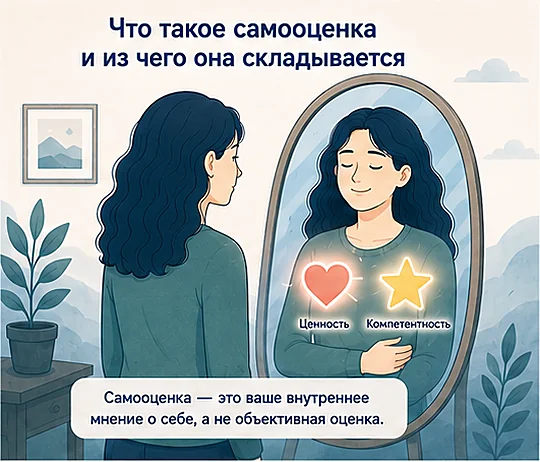
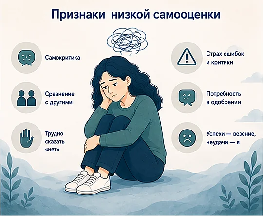
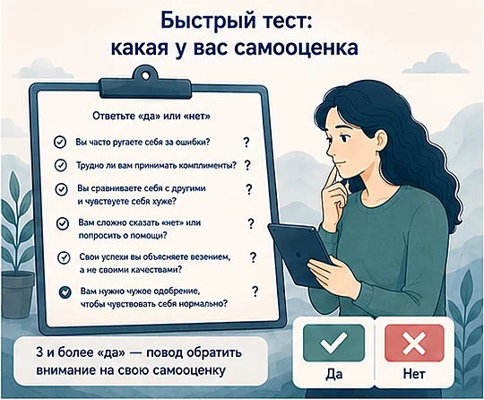
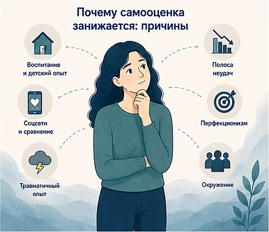
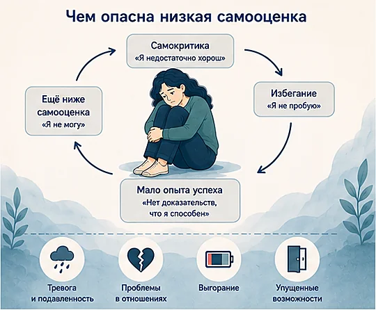
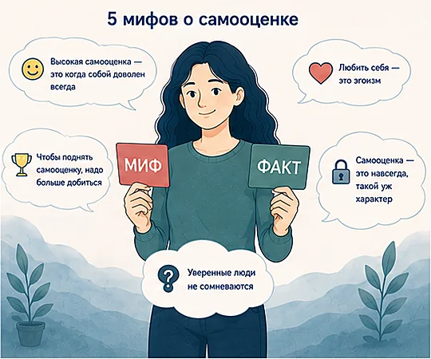
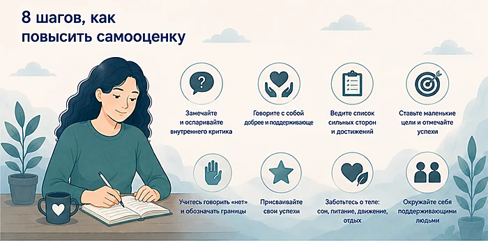
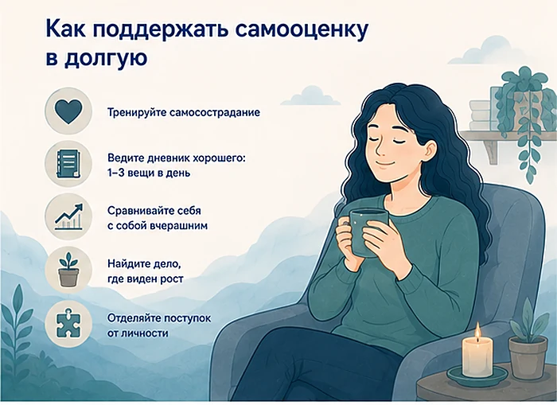
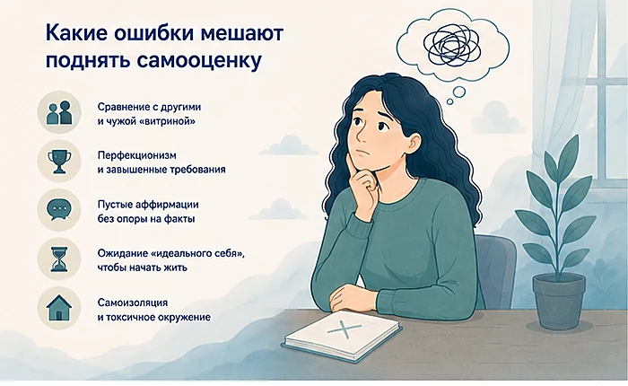
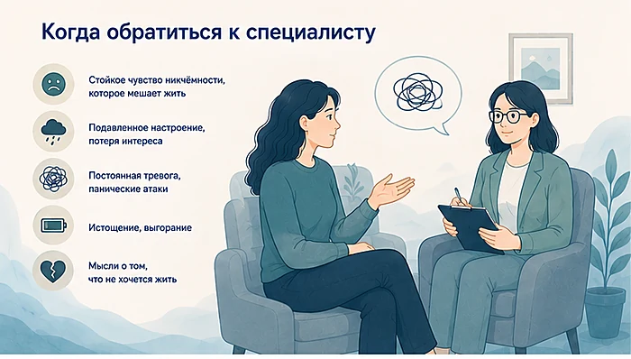

Главная → Блог → Как повысить самооценку
Как повысить самооценку: 8 шагов, которые реально работают
Обновлено: 04.07.2026 · 10 минут чтения
Чтобы повысить самооценку, нужно менять не громкие лозунги о себе, а привычный способ обходиться с собой: замечать и оспаривать самокритику, опираться на факты, а не на ощущения, ставить посильные цели и относиться к себе с той же добротой, что и к другу. Самооценка — это не врождённая черта и не «повезло с характером», а навык. А значит, её можно натренировать в любом возрасте — постепенно и без насилия над собой.
- самооценка — это ваше отношение к себе, а не объективная оценка;
- она не врождённая: формируется опытом — значит, её можно менять;
- низкая самооценка тянет за собой тревогу, выгорание и проблемы в отношениях;
- работают не аффирмации, а действия: факты против критика, маленькие цели, границы, забота о себе;
- меняется постепенно — за недели и месяцы регулярной практики, а не за один вечер.
- Что такое самооценка и из чего она складывается
- Признаки низкой самооценки
- Быстрый тест: какая у вас самооценка
- Почему самооценка занижается: причины
- Чем опасна низкая самооценка
- 5 мифов о самооценке
- 8 шагов, как повысить самооценку
- Как поддержать самооценку в долгую
- Какие ошибки мешают поднять самооценку
- Когда обратиться к специалисту
- Частые вопросы
Что такое самооценка и из чего она складывается
Самооценка — это ваше внутреннее мнение о себе: насколько вы считаете себя ценным, способным и достойным хорошего отношения. Ключевое слово здесь — «мнение». Самооценка не измеряет, какой вы «на самом деле», она отражает, как вы привыкли о себе думать. Поэтому очень успешный человек может жить с низкой самооценкой, а человек со скромными результатами — с устойчивой и спокойной.
Психологи обычно выделяют в самооценке две опоры: ощущение собственной ценности («я достоин уважения и любви просто так, а не за достижения») и ощущение компетентности («я справляюсь с тем, что для меня важно»). Когда проседает любая из них, самооценка шатается: одни отчаянно доказывают, что чего-то стоят, через успехи и одобрение, другие заранее считают себя «недостаточными».

Важно не путать три близких понятия — их часто смешивают:
- Самооценка — насколько вы себя цените в целом.
- Уверенность в себе — вера в то, что вы справитесь с конкретной задачей. Можно быть уверенным в работе и при этом с шаткой общей самооценкой.
- Самопринятие — способность относиться к себе по-доброму даже там, где вы несовершенны. Это фундамент, на котором здоровая самооценка держится крепче всего.
Самооценка — это репутация, которую человек имеет у самого себя: то, насколько он в глубине души считает себя достойным и способным.
И главное: самооценка — не приговор и не фиксированная величина. Она сложилась из вашего опыта и продолжает складываться каждый день из того, как вы с собой разговариваете. Более того, самооценка не статична и в течение жизни: по данным психологических исследований, в среднем она ниже всего в подростковом возрасте, постепенно растёт в зрелости и достигает пика ближе к 50–60 годам. Именно поэтому её можно поднять — переучившись обходиться с собой иначе.
Признаки низкой самооценки
Низкая самооценка редко выглядит как громкое «я себя не люблю». Чаще это фон, который тихо управляет решениями. Присмотритесь, если узнаёте у себя несколько признаков:

- вы часто критикуете себя и разговариваете с собой жёстче, чем с кем-либо другим;
- вам трудно принимать комплименты — кажется, что хвалят из вежливости или по ошибке;
- вы сравниваете себя с другими и почти всегда не в свою пользу;
- вам сложно говорить «нет», обозначать личные границы и просить о нужном;
- вы боитесь ошибок и критики, откладываете дела из страха сделать «недостаточно хорошо»;
- вы объясняете успехи везением, а неудачи — тем, что «вы такой»;
- вам нужно постоянное одобрение, чтобы чувствовать себя нормально;
- вы легко соглашаетесь на плохое отношение к себе, считая, что «большего не заслуживаете».
Если это про вас — дело не в том, что с вами что-то не так. Просто внутренний критик привык звучать громче фактов (а если вы при этом объективно успешны, но живёте со страхом «разоблачения», загляните в статью про синдром самозванца — это близкое, но отдельное состояние). Ниже разберём, как вернуть громкость на место.
Отличить самокритику от здоровой требовательности помогает простой ориентир: здоровая требовательность говорит о действии («в следующий раз подготовлюсь лучше»), а низкая самооценка говорит о вас целиком («я неудачник»).
| Голос внутреннего критика | Поддерживающий внутренний голос |
|---|---|
| «Я ни на что не способен» | «У меня пока не получается — научусь» |
| «Все справляются, один я нет» | «У каждого свой темп, я иду своим» |
| «Ошибся — значит, я никчёмный» | «Ошибся — значит, узнал, что поправить» |
| «Мне похвала не по адресу» | «Спасибо, мне приятно это слышать» |
Быстрый тест: какая у вас самооценка
Это не диагностика, а способ быстро свериться с собой. Ответьте «да» или «нет» на шесть вопросов:

- Вы часто ругаете себя за ошибки и промахи, даже мелкие?
- Комплименты и похвалу вам трудно принять — хочется возразить?
- Вы регулярно сравниваете себя с другими и проигрываете в этом сравнении?
- Вам сложно отказать, попросить о помощи или отстоять своё мнение?
- Свои успехи вы чаще объясняете везением, чем своими качествами?
- Вам нужно чужое одобрение, чтобы почувствовать, что вы всё делаете правильно?
Три и более «да» — повод присмотреться к теме: скорее всего, самооценка занижена и влияет на вашу жизнь заметнее, чем хотелось бы. Это не диагноз и не повод расстраиваться — а сигнал, что стоит начать с собой бережную работу. Как именно — дальше. А если хочется разобрать свои ответы прямо сейчас, их можно проговорить с ИИ-психологом — бесплатно и анонимно.
Почему самооценка занижается: причины
Низкая самооценка почти никогда не берётся из воздуха. Обычно это результат опыта — чаще всего раннего, — который научил человека сомневаться в своей ценности. Причин, как правило, несколько, и они накладываются друг на друга.

- Детский опыт и воспитание. Частая критика, сравнения с другими детьми, любовь «за оценки», холодность или, наоборот, завышенные ожидания — так формируется установка «меня ценят, только когда я хорош».
- Травматичный опыт. Буллинг, унижения, отвержение, эмоциональное или физическое насилие оставляют глубокое ощущение «со мной что-то не так».
- Сравнение и соцсети. Лента показывает чужие витрины — успехи, тела, отпуска, — и на их фоне своя обычная жизнь кажется «недостаточной». Мозг сравнивает ваш закулис с чужой обложкой.
- Полоса неудач. Затяжной стресс, потеря работы, развод, болезнь бьют по ощущению «я справляюсь» и надолго роняют самооценку.
- Перфекционизм. Планка «идеально» превращает любой нормальный результат в провал, а значит, поводов гордиться собой почти не остаётся.
- Окружение. Обесценивающий партнёр, токсичный коллектив, «друзья», рядом с которыми вы чувствуете себя хуже, — среда способна занижать самооценку годами.
Заметить свою причину полезно не для того, чтобы искать виноватых, а чтобы понять: низкая самооценка — это выученная реакция, а не правда о вас. Всё, что было выучено, можно и переучить.
Чем опасна низкая самооценка
Низкая самооценка кажется «просто чертой характера», но в долгую она дорого обходится — и в отношениях, и в карьере, и для психики. Она работает как фильтр: пропускает всё плохое о вас и отсеивает хорошее.

Коварство в том, что она самоподдерживается. Круг замыкается так: самокритика («у меня не выйдет») → избегание (не пробую, отказываюсь, откладываю) → мало опыта успеха (нет фактов, которые опровергли бы критика) → ещё ниже самооценка. Чем меньше вы себе позволяете, тем меньше доказательств, что вы способны, — и тем громче звучит «я не могу». К чему это приводит:
- Тревога и подавленность. Постоянная самокритика держит нервную систему в напряжении и подпитывает тревогу, а в тяжёлых случаях — сниженное настроение.
- Проблемы в отношениях. Трудно обозначать границы, легко терпеть плохое отношение, тянет искать постоянных подтверждений любви — всё это создаёт напряжение в паре.
- Выгорание. Чтобы доказать свою ценность, человек берёт на себя слишком много и работает на износ — прямая дорога к выгоранию.
- Упущенные возможности. Страх «не дотянуть» заставляет отказываться от новой работы, проектов, знакомств — жизнь сужается.
- Зависимость от чужого мнения. Когда опоры нет внутри, настроение целиком зависит от того, похвалили вас или нет.
Именно поэтому самооценку стоит не «терпеть», а укреплять: она влияет почти на всё — от того, как вы работаете, до того, кого впускаете в свою жизнь.
5 мифов о самооценке
Вокруг темы много заблуждений, из-за которых люди годами не берутся за самооценку или делают это неправильно. Разберём главные.

- Миф 1. Высокая самооценка — это когда собой доволен всегда. Нет. Здоровая самооценка — не про «я идеален», а про «я ценен, даже когда ошибаюсь». Устойчивость важнее высоты.
- Миф 2. Чтобы поднять самооценку, надо больше добиться. Успех не лечит: планка просто поднимается выше, и нового достижения снова «мало». Дело не в результатах, а в том, как вы к себе относитесь.
- Миф 3. Уверенные люди не сомневаются. Сомневаются все. Разница в том, что при здоровой самооценке сомнение не превращается в приговор себе.
- Миф 4. Любить себя — это эгоизм. Наоборот: человек с опорой внутри меньше требует от других подтверждений и способен давать больше тепла. Пустой сосуд не из чего наливать.
- Миф 5. Самооценка — это навсегда, такой уж характер. Это не черта, а выученный навык отношения к себе. Его можно тренировать в любом возрасте — как мышцу.
8 шагов, как повысить самооценку
Самооценка растёт не от лозунгов «полюби себя», а от конкретных действий, которые дают мозгу новые доказательства вашей ценности. Не обязательно всё сразу — выберите два-три шага и начните с них.

- Поймайте и оспорьте внутреннего критика. Заметив мысль «я ни на что не гожусь», спросите: это факт или привычная фраза? Какие есть доказательства против? Что я сказал бы другу на моём месте? Это базовый приём из КПТ: мы не спорим с собой на эмоциях, а проверяем мысль фактами.
- Смените тон на дружеский. Обращайтесь к себе так, как к близкому другу, который оступился: с поддержкой, а не с кнутом. Простой вопрос «что бы я сказал другу?» мгновенно меняет внутренний голос — а именно он формирует самооценку.
- Ведите список сильных сторон и достижений. Выпишите свои качества, навыки, поступки, которыми гордитесь, добрые отзывы о вас. В момент самокритики перечитывайте: критик оперирует ощущениями, а список — это факты, которые он игнорирует.
- Ставьте маленькие посильные цели. Самооценка растёт от опыта «я справился». Разбивайте большое на шаги, которые точно по силам, и отмечайте каждый как выполненный. Много маленьких побед убеждают лучше одной большой.
- Учитесь говорить «нет» и обозначать границы. Каждый раз, когда вы отстаиваете своё вместо привычного «ладно, потерплю», вы сообщаете себе: мои интересы важны. Границы — это самооценка в действии.
- Присваивайте успехи. Поймав себя на «просто повезло», добавляйте свой вклад: «повезло — и я подготовился, разобрался, довёл до конца». Учитесь говорить «спасибо» на похвалу, а не отмахиваться от неё.
- Заботьтесь о теле. Сон, движение, еда и отдых напрямую влияют на самоощущение: на фоне усталости критик всегда громче. Забота о себе — это ещё и сообщение «я достоин заботы».
- Пересмотрите окружение. Побольше общайтесь с теми, рядом с кем вы чувствуете себя лучше, и сокращайте контакт с теми, кто постоянно обесценивает. Среда влияет на самооценку сильнее, чем кажется.
Кстати, о первых двух шагах: перестроить внутренний диалог в одиночку бывает трудно — критик звучит убедительно. Проговорить свои мысли и разобрать их вслух можно с ИИ-психологом — анонимно, без осуждения и в любое время, когда накрывает самокритика.
- поймал(а) и оспорил(а) хотя бы одну самокритичную мысль;
- сказал(а) себе спасибо за что-то сделанное;
- записал(а) один свой успех или сильную сторону;
- не стал(а) сравнивать себя с чужой «витриной»;
- сделал(а) что-то заботливое для себя — без повода.
Как поддержать самооценку в долгую
Отдельные приёмы гасят вспышку самокритики и чувства вины, но чтобы самооценка окрепла надолго, важно менять привычный способ жить с собой.

- Тренируйте самосострадание. Относитесь к своим промахам как к общечеловеческим, а не как к доказательству вашей неполноценности. Доброжелательность к себе укрепляет самооценку надёжнее, чем самокритика.
- Ведите дневник хорошего. Каждый вечер записывайте 1–3 вещи, которые сегодня получились или порадовали. Так вы приучаете внимание замечать не только провалы.
- Сравнивайте себя с собой вчерашним. Ориентир на собственный прогресс поддерживает, а сравнение с другими почти всегда обесценивает.
- Найдите дело, где виден рост. Спорт, навык, хобби, где заметен прогресс, дают регулярные доказательства «я могу» — это подпитывает самооценку естественным образом.
- Отделяйте поступок от личности. «Я сделал плохо» — поправимо; «я плохой» — тупик. Держитесь первой формулировки.
Какие ошибки мешают поднять самооценку
Иногда мы неосознанно тянем самооценку вниз. Вот частые ловушки:

- Сравнивать себя с чужой витриной. В соцсетях вы видите чужие результаты, но не сомнения и труд за ними. Такое сравнение всегда не в вашу пользу.
- Гнаться за идеалом. Перфекционизм поднимает планку быстрее, чем вы её берёте, — и поводов гордиться собой не остаётся.
- Повторять пустые аффирмации. «Я лучший», в которое вы не верите, вызывает внутренний спор и роняет самооценку сильнее. Опирайтесь на реалистичные, подкреплённые фактами фразы.
- Ждать «идеального себя», чтобы начать жить. «Вот похудею / заработаю / исправлюсь — тогда полюблю себя». Так самопринятие откладывается навсегда. Оно нужно не в конце пути, а в начале.
- Замыкаться в одиночестве. В изоляции критик звучит громче всего. Поддерживающие люди возвращают более трезвый взгляд на себя.
Когда обратиться к специалисту
Приёмы самопомощи хорошо работают с «обычной» заниженной самооценкой. Но есть сигналы, при которых стоит подключить психолога или врача:

- ощущение собственной никчёмности держится месяцами и мешает работать, учиться, общаться;
- появились стойко сниженное настроение, потеря интереса, ощущение бессмысленности;
- нарастает постоянная тревога или случаются панические атаки;
- вы дошли до истощения и признаков выгорания;
- низкая самооценка связана с травмой, насилием или токсичными отношениями;
- появляются мысли о том, что не хочется жить.
Самооценка хорошо поддаётся работе с психотерапевтом — особенно в подходе КПТ и терапии, ориентированной на сострадание к себе: специалист помогает увидеть и переписать те самые установки, из-за которых вы годами себя обесценивали.
Частые вопросы
Можно ли повысить самооценку самостоятельно?
Да, в большинстве случаев самооценку можно поднять самостоятельно. Помогают конкретные привычки: замечать и оспаривать самокритичные мысли, вести список своих сильных сторон и достижений, ставить небольшие посильные цели и хвалить себя за них, окружать себя поддерживающими людьми и заботиться о теле — сне, движении, отдыхе. Если же низкая самооценка держится годами, связана с травматичным опытом или тянет за собой тревогу и подавленность, эффективнее подключить психолога.
За сколько времени можно поднять самооценку?
Быстрых волшебных способов нет: самооценка — это накопленная привычка относиться к себе, и меняется она постепенно. Первые сдвиги в самоощущении обычно заметны за несколько недель регулярной практики, а устойчивый результат складывается за несколько месяцев. Важнее не скорость, а регулярность маленьких шагов: каждый раз, когда вы оспариваете внутреннего критика и опираетесь на факты, вы понемногу перестраиваете отношение к себе.
Чем низкая самооценка отличается от синдрома самозванца?
При низкой самооценке человек в целом считает себя недостаточно хорошим и обычно сам в это верит — во многих сферах жизни. Синдром самозванца устроен иначе: объективно человек часто успешен и компетентен, но не может присвоить свои достижения и боится, что его вот-вот разоблачат. Проще говоря, низкая самооценка — это общее «я хуже других», а синдром самозванца — «на самом деле я всех обманул». Они часто соседствуют и усиливают друг друга.
Как повысить самооценку подростку?
Подростку помогает то же, что и взрослому, но с поправкой на возраст: поменьше сравнений с другими (особенно в соцсетях), побольше занятий, где виден собственный прогресс — спорт, творчество, навыки. Важна поддержка близких: подростку нужно слышать, что его ценят не за оценки и достижения, а самого по себе. Стоит помогать ему замечать сильные стороны и относиться к ошибкам как к части учёбы. Если самокритика сильно мешает общаться, учиться или появляется подавленность, лучше обратиться к психологу.
Помогают ли аффирмации повысить самооценку?
Сами по себе — слабо. Повторять «я лучший», когда внутри вы в это не верите, часто даёт обратный эффект: мозг спорит и самооценка проседает ещё сильнее. Работают не громкие лозунги, а реалистичные и опирающиеся на факты формулировки: вместо «я всё могу» — «я уже справлялся с трудным раньше и справлюсь сейчас». Аффирмации полезны как дополнение к действиям, но не заменяют их.
Влияет ли низкая самооценка на отношения?
Да, и сильно. При низкой самооценке человек чаще терпит плохое отношение, боится обозначать свои границы и просить о нужном, ревнует и ищет постоянных подтверждений, что его любят. Иногда — наоборот, заранее отстраняется, чтобы «не быть отвергнутым». Всё это создаёт напряжение в паре. Хорошая новость в том, что по мере роста самооценки отношения обычно становятся спокойнее и здоровее — появляется опора внутри, а не только в партнёре.
Можно ли повысить самооценку после 40 лет?
Да, возраст здесь не помеха. Самооценка — это навык отношения к себе, а не что-то застывшее: исследования показывают, что в среднем она даже растёт от молодости к зрелости. После 40 у человека обычно больше опыта, на который можно опереться, и меньше зависимости от чужого мнения. Те же приёмы — опора на факты, самосострадание, забота о себе и границы — работают в любом возрасте.
Можно ли поднять самооценку без психолога?
В лёгких и умеренных случаях — да. Многим помогают простые регулярные привычки: оспаривать внутреннего критика, вести список достижений, ставить посильные цели, обозначать границы и заботиться о себе. Психолог нужен, если низкая самооценка держится годами, связана с травмой или насилием, тянет за собой подавленность и тревогу — тогда самостоятельных усилий обычно недостаточно.
Почему самооценка снова падает?
Самооценка не статична — она колеблется вслед за событиями: критика, неудача, усталость или сравнение себя с другими временно роняют её, и это нормально. Проблема не в самих спадах, а в умении возвращаться: опираться на факты, а не на сиюминутные ощущения. Если же самооценка падает после каждой мелочи и подолгу не восстанавливается, значит, внутренняя опора пока слабая — её и стоит укреплять описанными приёмами.
Помогает ли спорт повысить самооценку?
Да, и заметно. Регулярное движение улучшает настроение и снижает тревогу, а видимый прогресс — сильнее, быстрее, выносливее — даёт мозгу конкретные доказательства «я могу». Важно не сравнивать себя с другими в зале, а ориентироваться на собственный рост. Спорт — не волшебная таблетка, но одна из самых доступных опор для самооценки.
Как повысить самооценку мужчине?
Механизм у мужчин тот же, что и у женщин, но часто давит установка «мужчина должен всегда быть сильным и успешным», из-за которой трудно признавать уязвимость и просить о помощи. Помогает то же самое: отделять свою ценность от достижений и статуса, опираться на факты, а не на сравнение, обозначать границы и позволять себе быть неидеальным. Обратиться за поддержкой — не слабость, а зрелость.
Как поднять самооценку после расставания?
После расставания самооценка часто проседает: появляются мысли «со мной что-то не так» и «меня невозможно любить». Первое — не верить этим мыслям: конец отношений говорит о несовместимости, а не о вашей ценности. Дальше помогает вернуть опору на себя: восстановить свои занятия и круг общения, заботиться о теле, вести список сильных сторон и не торопить себя. Если тоска и самокритика затягиваются надолго, стоит обратиться к психологу.
Если внутренний критик звучит громче фактов и обесценивает всё, что вы делаете, — с этим не обязательно справляться в одиночку. ИИ-психолог может помочь заметить искажённые мысли и потренировать техники самопомощи — тепло, анонимно, без осуждения. А при выраженных или затяжных симптомах важно обратиться к психологу или психотерапевту.
Читать также
- Синдром самозванца: 7 способов перестать чувствовать себя обманщиком — когда объективно успешны, но не можете это присвоить.
- Как справиться с тревогой: 8 техник, которые помогают — унять фоновую тревогу, на которой критик громче всего.
- Эмоциональное выгорание: 5 стадий, признаки и как восстановиться — куда приводит попытка доказать свою ценность через работу на износ.
- Как пережить расставание и отпустить человека: 8 шагов — если самооценка просела именно после разрыва отношений.
- Прокрастинация: почему вы откладываете дела и 7 способов перестать — если откладывание связано со страхом не справиться.
- Как справиться с одиночеством: 8 шагов, когда рядом никого нет — если из-за «я никому не интересен» вы всё реже выходите к людям.
- Токсичные отношения: 12 признаков и как из них выйти — если самооценка падает от постоянной критики близкого человека.
Материал подготовлен командой AI Therapist и основан на доказательных подходах к работе с самооценкой и мышлением: когнитивно-поведенческой терапии (КПТ, Аарон Бек), концепции самооценки Натаниэля Брандена, практике самосострадания Кристин Нефф и техниках осознанности (Mindfulness). Мы опираемся на рекомендации авторитетных источников в области психического здоровья и обновляем материалы по мере появления новых данных. Статья носит просветительский характер и не заменяет консультацию специалиста.
Источники: NHS (Национальная служба здравоохранения Великобритании) — Raising low self-esteem; Better Health Channel (Департамент здравоохранения штата Виктория, Австралия) — Self-esteem.
Кто отвечает за содержание сайта и по каким правилам мы готовим материалы — на странице о проекте.